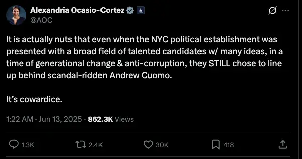
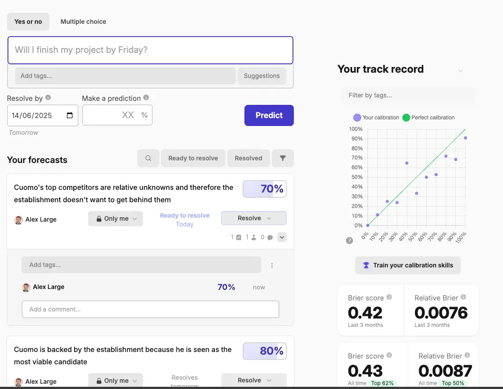

- 2025-06-14
So yesterday (America & Immigration) I just did bottom-up learning, so today I’ll get back on the “poking around twitter” vibe.
First tweet I saw:
1. AOC re: Andrew Cuomo

Link
- Ok so, as an English guy who doesn’t really follow the news, this is very juicy, because idk wtf is going on here
My initial model of what this all means
1a. I guess Andrew Cuomo is now the head (or at least the frontrunner) for either the Republicans or Democrats in New York?
- So I guess Andrew Cuomo was recently elected to be the head of NYC? So presumably he’s the head of New York state - I’m 99% sure this is called the “Governor” (in the UK we just have MPs, members of Parliament, at a county level)
- Also, if he’s running, then what’s he been up to until this point? Is he already the Governor and he’s running again?
- What was Rudy Guliani - the Mayor, right? I’m like 95% sure that’s correct, and that he’s no longer the Mayor
1b. How do State-level elections work?
- Thing I don’t know - how often do states have elections? Are state elections all synced up across the US, or do they happen at kinda random-ass times? Is it like, you get 4 years as the Governor, like the President? Are there term limits?
1c. Is Cuomo a Republican or a Democrat?
- If I had to guess, I’d say he’s a Democrat
- AOC is more likely to be like “wtf, my party are letting me down here”, vs “can’t believe the Republicans stand behind this guy”
- New York is, presumably, very Democrat-leaning? Like, it’s metropolitan, the kind of “liberal elite” vibes? California and NYC are probably both Democrat strongholds?
- But then again, there are lots of like… bankers, business people and shit. But I would assume there’s a huge lower-and-middle-class which drowns out the rich folks
- Vs e.g. the Midwest is Republican-leaning?
1d. What scandals?
- I’m assuming he’s running for governor. What scandals might a probably Democrat guy he wracked with?
- Money stuff - taking money from dubious sources. Super PACs
- Could he be the guy who was texting minors?? Or was that Matt Gaetz (sp)? I think it was Matt Gaetz, feel like I heard about that via SNL
- AOC said anti-corruption, so I think it’s probably yeah, money stuff.
- What money stuff would constitute a scandal?
- I’ve heard about governors and members of Congress (which I know barely anything about atm) have done stuff like insider training, also taking money from lobbying groups that are considered immoral, idk what else
- What other scandals are common?
- Money stuff, cheating on spouses… idk what the third would be… I truly can’t think of a third thing lol, wtf
1e. Why would they choose to back him despite the scandals?
- Well he must be the most viable candidate… he’s probably got lots of experience, and credentials, and the scandals haven’t affected him enough to make jumping ship worth it
1f. What does “lining up behind” a candidate mean?
- Is it like… agreeing with that person that you’re on their side, that you’ll… signal boost them? Publicly endorse them?
Predictions
- Andrew Cuomo is a member of the Democratic party - 70% sure
- Andrew Cuomo is currently the Governor of the state of New York - 40%
- Andrew Cuomo is running for reelection - 40%
- The election cycles for States happen at different times - states don’t sync up so everyone across the US votes for new governors at the same time. It happens kinda randomly - 60%
- Rudy Guiliani was the Mayor of New York - 99%
- Rudy Guiliani is no longer the mayor of New York - 100%
- State governors are reelected every 4 years (?) - 20%
- There are term limits for state governors - 60%
- New York is historically a Democrat-led state - 75%
- Cuomo’s scandals are primarily re: money stuff, specifically taking funds from dubious places - 40%
- Feels likely that I’m missing something here. My model of “political scandals” feels very weak. But then again, I’ve vaguely followed the news for a while, so you’d think if “money” and “affairs” are the only things are top of mind… ok, I’m gonna go 60%
- Matt Gaetz was the one who was texting minors (at least 1 minor, idk if it was multiple) - 70%
- If I ask ChatGPT what the 2 most common scandal types are for Governors, it’ll be money stuff, and marital infidelity - 55%
- Cuomo is backed by the establishment because he is seen as the most viable candidate - 80%
- Cuomo’s top competitors are relative unknowns and therefore the establishment doesn’t want to get behind them - 70%
Put them in Fatebook so I get to update my calibration score

Updates
- Andrew Cuomo is a member of the Democratic party - 70% sure
- ✅ TRUE
- Andrew Cuomo is currently the Governor of the state of New York - 40%
- ❌ FALSE
- He was the Governor, he resigned, now he’s running for Mayor
- Andrew Cuomo is running for reelection - 40%
- ❌ FALSE
- I was right to do <50%, he is kind of running for reelection (to a leadership position), but he’s never been mayor before
- The election cycles for States happen at different times - states don’t sync up so everyone across the US votes for new governors at the same time. It happens kinda randomly - 60%
- ✅ TRUE
- I’m gonna say this was right, although it’s imprecise. ChatGPT says that most states do it during mid-terms, but some don’t. I could have been more precise by saying “not all states run elections at the same time”
- Rudy Guiliani was the Mayor of New York - 99%
- ✅ TRUE
- Rudy Guiliani is no longer the mayor of New York - 100%
- ✅ TRUE
- State governors are reelected every 4 years (?) - 20%
- FALSE ❌
- I was right! They mostly are, but some states reelect every 2 years.
- I should have been more precise by saying “all governors are reelected every 4 years” (20%)
- There are term limits for state governors - 60%
- FALSE ❌
- I should have written “all states have term limits”, as that’s what I was getting at
- Turns out some states don’t have term limits. Most do though
- New York is historically a Democrat-led state - 75%
- ✅ TRUE
- Cuomo’s scandals are primarily re: money stuff, specifically taking funds from dubious places - 40%
- ❌ FALSE - ChatGPT says his #1 scandal is re: sexual harrassment
- Matt Gaetz was the one who was texting minors (at least 1 minor, idk if it was multiple) - 70%
- ✅ TRUE
- If I ask ChatGPT what the 2 most common scandal types are for Governors, it’ll be money stuff, and marital infidelity - 55%
- ✅ TRUE
- Cuomo is backed by the establishment because he is seen as the most viable candidate - 80%
- ✅ TRUE, although this is a kind of lame prediction
- Turns out he’s seen as more moderate, I could have guessed something like that
- Cuomo’s top competitors are relative unknowns and therefore the establishment doesn’t want to get behind them - 70%
- ❌ FALSE - because he’s running for Mayor (not Governor, as I thought) - he’s running against the current Mayor, who isn’t a relative unknown, because he’s you know, the Mayor of New York City, lol
This was a little tedious to do
- I wonder about this - writing it down ahead of time felt useful to extract maximum questions from the tweet, but then porting to Fateboot and then porting my answers back to here feels a little clunky…
- Useful though! So much juice in one tweet!
- I also have a sense that this was too much. I feel like I had too many predictions, and it doesn’t feel super salient. Vs if I really zeroed in on trying to richly model one specific facet…
This took ~1 hour
- Literally chose the first tweet on my timeline
- Pull out ~15 things I didn’t know, predicted them
- Put them in Fatebook so that I could cash them out as YES or NO
- Wrote about my updates here
- Feel kinda drained… (I’ve done a bunch of other stuff today too)
- I think tweeting at people feels more fun, this feels fairly inert. But still got a bunch of useful updates to my very shoddy model